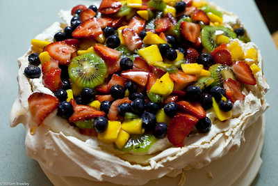

Pavlova

Description
A showstopping Kiwi dessert with a crisp meringue shell and a soft, pillowy centre, topped with clouds of whipped
cream and fresh fruit. A staple at any New Zealand celebration!
AI Generated.
Ingredients
- 2 tbsp green curry paste
- 4 pieces egg whites (at room temperature)
- 1 cups caster sugar
- 1 teaspoons cornflour
- 1 teaspoons white vinegar
- 1 teaspoons vanilla essence
- 2 cups fresh fruit (e.g. kiwifruit, strawberries, blueberries)
- 1.3 cups whipping cream
Steps
- Preheat oven: Preheat your oven to 150°C. Line a baking tray with baking paper and draw a 20 cm circle on it as
a guide.
- Beat egg whites: Using an electric mixer, beat 4 pieces egg whites (at room temperature) on high speed until
stiff peaks form — the mixture should look glossy and hold its shape.
- Add sugar: Gradually add 1 cups caster sugar one tablespoon at a time, beating well between each addition, until
the mixture is thick and glossy. This should take around 8 minutes.
- Fold in remaining ingredients: Gently fold in 1 teaspoons cornflour, 1 teaspoons white vinegar, and 1 teaspoons
vanilla essence using a spatula until just combined.
- Shape the pavlova: Spoon the mixture onto the circle on your baking paper. Shape it into a round with slightly
raised edges to form a well in the centre for the toppings.
- Bake: Place in the oven and immediately reduce the temperature to 120°C. Bake for 75 minutes, then turn the oven off and leave the pavlova inside to cool completely — do not open the oven door.
- Whip the cream: Once the pavlova is fully cooled, whip 1.3 cups whipping cream with an electric mixer until soft
peaks form.
- Top and serve: Spoon the whipped cream over the pavlova and top with 2 cups fresh fruit (e.g. kiwifruit,
strawberries, blueberries). Serve immediately.